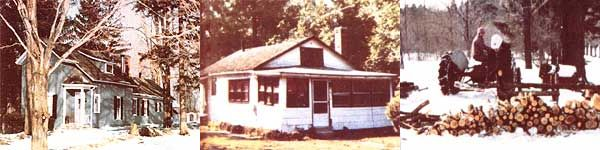

LAURIE L. SCHWAB
LEFT TO RIGHT: A dream made possible by a luck sweepstakes entry ...provided us with a happy escape from second-rate suburbia ...This growing woodfile is an enormous comfort ...when snow balnkets the coountryside of Eden.